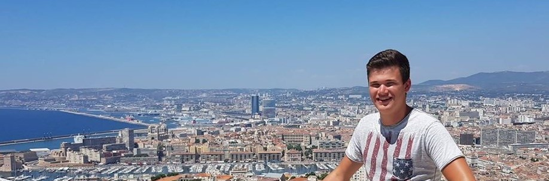

Bij Smart Start gaat het erom om de studenten goed op gang te helpen in de minor. Hoe ga je aankomende periode te werk? en wat voor doelen worden er gesteld?
Om antwoord te vinden op deze vragen dient iedere student een smart journey te ontwikkelen waarbij ze voor ieder onderdeel aangeven wat zij aankomende periode gaan doen om de verschillende competenties te ontwikkelen.
Daarnaast dien ik te weten hoe ik me proffesioneel op stel tegenover externe contacten en dien ik een organisatie-analyse op te stellen.
Geinteresseerd?
Lees dan verder.
Om goed te monitoren waar ik sta tijdens mijn minor heb ik een Smart Journey opgesteld. Ik heb er bewust voor gekozen om mijn eigen ontwerp te maken voor deze opdracht. Dit niet omdat de opzet van mijn docent mij niet aansprak, maar puur om mij zelf verder te ontwikkelen en te kijken waar mijn mogelijkheden liggen. Per onderwerp heb ik de Smart Journey's onder aan de pagina toegevoegd.
In deze overzichtelijke weergave is te zien waar ik mee bezig ben geweest en in welke week van de minor dit is geweest. Daarnaast is er onder het wekenoverzicht een weergave te zien van de competenties die van mij verwacht worden bij dit desbetreffende onderdeel. Deze competenties zijn afkomstig van een overzicht dat de opleiding voor ons heeft opgesteld. Hierdoor weer ik altijd of ik alle competenties besproken heb.
Een belangrijk model bij de minor Smart Industrie is het Smart Industrie wiel. In dit wiel is te zien welke onderdelen toebehoren tot Smart Industrie.
De afbeelding hiernaast geeft het model weer. Dit model maakt een splitsing tussen drie kernwaarden van Smart Industrie. Digitalisering, Gecentraliseerd Netwerk en Productietechnieken.
De buitenste rand bestaat uit de onderdelen van Smart Industrie. Deze onderdelen zijn direct te relateren en de kernwaarden en staan ook zo afgebeeld.
Veel mensen willen wat gaan ondernemen met betrekking tot Smart Industrie. Dit komt voornamelijk door de groei die deze sector de laatste jaren door heeft gemaakt en de aankomende jaren nog gaat maken. Echter is niet iedere onderneming in deze sector succesvol. Belangrijke succesfactoren bij Smart Industrie zijn.
Aangezien de markt van Smart Industrie vrijwel altijd veranderd, is flexibiliteit een van de belangrijkste kernwaardes van succes. Bij iedere nieuwe ontwikkeling of ontdekking wordt er verwacht dat jij of je onderneming zich hieraan aanpast. Als je hier niet in mee gaat doen tien andere ondernemingen dit wel en loop je eigenlijk al weer twee stappen achter.
Ook wordt bij Smart Industrie creativiteit beloond. Daarom is het belangrijk om bij iedere ontwikkeling verschillende toepassingen te bedenken. Zo worden er bijvoorbeeld robots ingezet voor veel verschillende handelingen. Bij de juiste creatieve oplossing voor een maatschappelijk probleem heb jij als onderneming een goudmijn gevonden.
Ook is het belangrijk om connecties te maken en te behouden. Met de juiste connecties in de Smart Industrie kom je heel ver. De afgelopen periode heb ik ondervonden hoe graag mensen elkaar helpen om gezamenlijk tot iets beters te komen. Ontwikkeling staat in de Smart Industrie voorop en is dus ook van groter belang dan concurrentie.
Het is heel fijn om te weten welke factoren van groot belang zijn voor Smart Industrie. Echter staat de vraag nog open hoe deze te meten zijn. Het is namelijk niet zo simpel als bij systeem waarbij je een aantal storingen kan meten. Hieronder licht ik bij iedere KSF (Kritische Succes Factor) toe of en hoe deze in de praktijk te meten is.
Flexibel houdt in dat jij je makkelijk aanpast aan veranderingen. De manier waarop je dit kan meten is door situaties na te gaan waarin jij of jou organisatie diende te veranderen. Hoe reageerde jij of jou organisatie op deze verandering? en op wat voor termijn is deze verandering doorgevoerd?
Ga voor je zelf na waar de knelpunten tegen verandering zitten en zorg ervoor dat deze barrières worden verminderd of verwijderd. Waardoor jij en je organisatie in het vervolg sneller kunnen handelen op verandering.
Het is moeilijk om te meten hoe creatief jou onderneming is. Echter is creativiteit wel een van de KSF’s van Smart Industrie. Daarom is het van belang om ieder prototype van jou onderneming te meten op creativiteit.
Meten van creativiteit kan op de volgende manier. Zo kan je ieder prototype of product nagaan bij welke van de volgende groepen hij behoort. De groepen lopen op in mate van creativiteit.
- Imitatie: Het ontwerp is hetzelfde als iets wat al bestaat.
- Variatie: Er is een kleine verandering in het ontwerp, maar is het nog steeds duidelijk waar het ontwerp op gebaseerd is.
- Combinatie: Het ontwerp is een combinatie van twee of meerdere andere dingen, zodat je kunt zeggen dat het iets nieuws is maar wel duidelijk gebaseerd op andere werken.
- Transformatie: Het is een nieuwe creatie, met elementen van ander werk maar wel origineel genoeg om op zichzelf te kunnen staan.
- Originele creatie: Het ontwerp is uniek en staat compleet op zichzelf. Het heeft nauwelijks tot geen verbanden met wat er al eerder gemaakt is.
Als laatste is een goed netwerk een belangrijke factor om te slagen in de Smart Industrie. Het is van groot belang om connecties te maken en te behouden, Echter is het moeilijk te meten wat een goed netwerk is. Veel connecties betekent namelijk niet altijd dat je er veel aan hebt. Zo kan er soms beter meer energie in de ene connectie worden gestoken dan in de andere.
Om te meten of jij een goed netwerk hebt kan je voor je zelf het beste verschillende situaties nabootsen. Welke contacten kunnen je waarin ondersteunen en zouden dit ook doen. Mocht je ergens geen connectie voor weten. Ga dan op zoek naar die juiste persoon om daarmee in contact te komen. Er ontstaat hierdoor een grotere mate van zekerheid voor de organisatie.
Voor mijn eigen ontwikkeling tijdens de minor Smart Industrie heb ik een aantal modellen opgesteld. Zo heb ik een Smart Journey ontwikkeld om mijn vooruitgang tijdens deze periode bij te houden. Ook heb ik aan het begin van deze periode een SWOT analyse voor mijzelf ingevuld zodat ik weet waar mijn kracht licht en waar ik in kan verbeteren.
Een SWOT-analyse is een analyse die je maakt voor jezelf of voor je bedrijf om inzichtelijk te krijgen waar je interne sterktes en zwaktes liggen, en waar externe kansen en bedreigingen kunnen ontstaan.
De sterktes die ik persoonlijk bezit en die ik van plan ben aankomende periode in te zetten bestaan uit.
Communicatief:Ik ben goed in communicatie met anderen. Met name in groepsvorm kan ik er goed voor zorgen dat de groepsdynamiek prettig blijft en dat het eindproduct een succes wordt.
Creatief:Ik heb vaak een andere kijk op verschillende vraagstukken. Deze kijk wil ik graag benutten om op te vallen in de groep waarmee ik deze minor volg.
Dit zijn de zwaktes waar ik veel rekening dien te houden aankomende periode.
Toewijding:Ik vindt het lastig om de toewijding voor een opdracht te vinden op de momenten dat de opdracht mijzelf niet zo aanspreekt. Dit kan ten koste gaan van het uiteindelijke resultaat.
Relativeren:Door mijn creatieve denken verlies ik het soms uit het oog om te relativeren. Hierdoor kan de haalbaarheid van een idee wel eens een uitdaging worden.
Hier heb ik kansen weergegeven die zich deze periode voor kunnen doen.
Netwerken:Door mijn communicatieve vaardigheden in te zetten kan de kans zich voor doen dat ik deze periode een goed netwerk met betrekking tot Smart Industrie op kan bouwen. Dit kan altijd nog van pas komen.
Bedrijfskundig:Door mijn achtergrond in de Facility Management heb ik een aardige rugzak met kennis op bedrijfskundig gebied. Deze kennis wil ik graag benutten deze periode om mijn aandeel te kunnen leveren in het project dat ik ga lopen.
Voor het volgende punt moet ik oppassen aankomende periode.
Motivatie:Aangezien de minor een totaal andere richting opgaat dan dat ik de afgelopen jaren gevolgd heb kan het wel eens wezen dan ik de interesse in het onderwerp verlies. Dit kan ten koste gaan van het eindresultaat.
Afgelopen periode heb ik de minor Smart Industrie gevolgd. Deze minor bestaat uit verschillende onderdelen waaronder ook Smart Start. Bij Smart start leer je hoe Smart industrie in elkaar steekt en hoe je jezelf deze periode het best kan ontwikkelen. In dit stuk reflecteer ik op afgelopen periode. Hierbij haal ik verschillende positieve punten naar voren maar breng ik ook punten die minder gingen aan het licht.
Over het algemeen vindt ik dat de minor goed is opgezet. Dit vooral door de verschillende onderdelen waar de minor in is verdeeld maar ook de aanwezigheid van praktijk en ervaring uit de bedrijfswereld. Helaas door het Coronavirus is een groot deel van de praktijk en fysieke contacten verloren gegaan. Dit heeft ervoor gezorgd dat de minor een totaal andere wending kreeg.
Ik ben een student die graag leert als ik me daartoe kan richten. Bij deze vindt ik vaak motivatie bij medestudenten om hier gezamenlijk het leerproces aan te gaan. Dit had ik graag ook afgelopen periode gedaan. Echter werd ik door het virus meer op mezelf aangewezen en kreeg de motivatie om veel te bereiken een grote deuk.
Het heeft mij veel moeite gekost om de inzet te vinden die nodig was om deze minor tot een succes te maken. Echter is er een draaipunt gekomen in mijn leerproces op het moment dat ik in ging zien dat ik meer moest doen mocht ik wat willen bereiken. Op dat moment ben ik veel gaan experimenteren op het gebied van Smart Technologie. Dit heeft mij een boost gegeven om mij verder in te zetten voor de minor Smart Technologie.
Ook kreeg het project een andere wending dan dat ik van tevoren gedacht had. Het bedrijfsproject kon geen doorgang vinden waardoor wij ook bij dit onderdeel op ons zelf aangewezen waren. Wij zijn met het idee gekomen om een eigen project op te starten. Dit project heet De Helpende Hand. In dit project hebben wij veel uren gestoken. Uiteindelijk heb ik mijn kennis op Smart Technologie goed toe kunnen passen door een groot aandeel bij het ontwikkelen van onze prototypes.
Bij het onderdeel Smart Start is ons ook geattendeerdt te werken aan je proffesionele houding. Als je hier niet sterk in bent kan je nog zo slim zijn echter zal het dan lastig worden proffesionele contacten te leggen voor de toekomst. Ik vindt het zelf vaak lastig werk en prive gescheiden te houden. Zo gedraag ik me in omgang met proffesionele relaties snel te informeel. Mijn focus ligt deze periode dan ook op dit vlak.
De eeste periode van deze minor heb ik mij goed kunnen focussen op mijn houding. Helaas werdt dit halvewege de minor verstoordt. Ik probeer echter via de webcam nog steeds aan mijn houding en taalgebruik te letten.
Al met al vond ik het een zeer pittige uitdaging om deze minor tot een succes te brengen. Echter ben ik van mening dat ik juist door mijn falen de afgelopen periode veel heb geleerd zowel op het gebied van Smart Technologie als op mijn persoonlijke ontwikkeling.
Ik ben van mening dat ik in het vervolg een minor als deze heel anders aan zou vliegen dan dat ik dat dit jaar gedaan heb. Zo zou ik meer vertrouwen hebben in mijn eigen kunnen en meer risico durven nemen bij verschillende opdrachten.
Aan het begin van deze minor is ons gevraagd een organisatie-analyse te maken van het bedrijf waar je destijds een project uit zou gaan voeren. In ons geval was dit BeSite uit Aalten. Helaas heeft dit project geen doorgang mogen vinden, echter is onze organisatie-analyse wel bij BeSite uitgevoerdt.
Mocht het je intressant lijken kan je via onderstaande link onze organisatieanalyse bekijken.
Daarnaast heb ik een organisatieanalyse ontwikkeld waarin ik de interne en externe aspecten van onze nieuwe organisatie De Helpende Hand bespreek. Ook deze analyse kunt u bekijken via de desbetreffende knop hieronder.
Om de minor goed te doorlopen heb ik een Smart Journey ontwikkeld die een weergave geeft van mijn competenties.
In deze Smart Journey is te zien hoever ik de competenties beheer die van mij gevraagd worden tijdens deze minor.